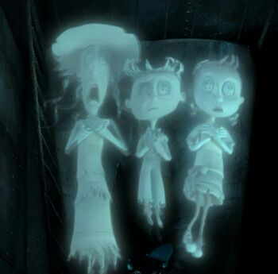

Niños Fantasmas

Los tres niños incluyen la niña fantasma alta,
el niño fantasma y la niña hada. Los tres personajes explican que sus
almas han sido robadas y mantenidas cautivas, y Coraline debe
recuperarlas para que todos sean libres. La chica fantasma es relativamente
recatada. El niño fantasma es el más audaz de los tres personajes,
y es el más franco sobre el otro mundo. La niña hada es la favorita
de Coraline, ya que ve partes de su propia personalidad en este
personaje.